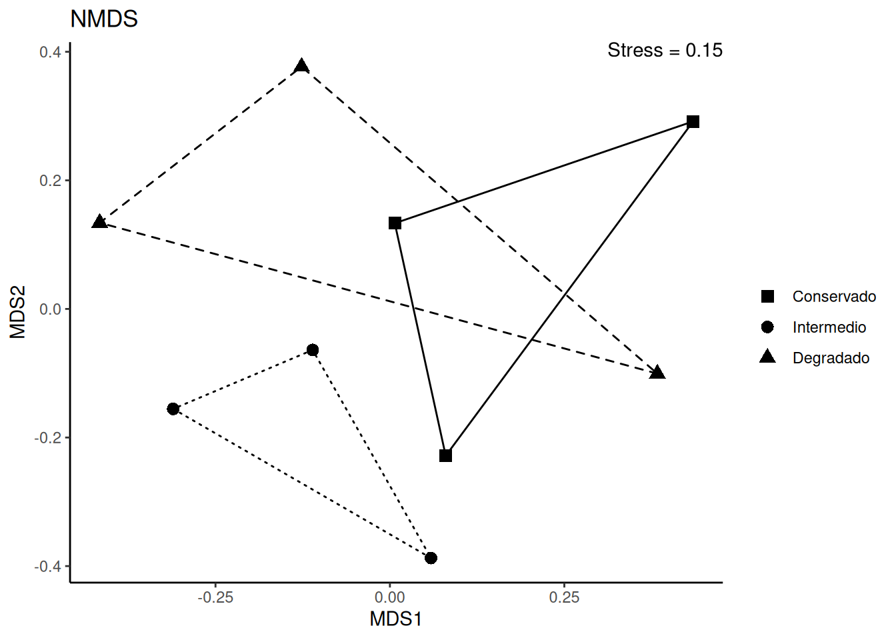

Capítulo 7: Estudio de la estructura de la comunidad
Curvas de Whittaker
library(BiodiversityR)
library(ggplot2)
library(ggrepel)
# ---- Rangos de abundancia ----
rank_abundancia <- rankabundance(abundancia$localidad)
rankabunplot(rank_abundancia, scale = "abundance")Figura 8: Gráfico rango-abundancia de todos los sitios
ambiente$estado_conservacion <- factor(ambiente$estado_conservacion)
rank_abundancia_amb <- rankabuncomp(
abundancia$localidad,
y = ambiente,
factor = "estado_conservacion",
legend = FALSE
)# Marcamos especies únicas
especies_unicas <- lapply(
unique(levels(ambiente$estado_conservacion)),
function(group) {
setdiff(subset(rank_abundancia_amb, Grouping == group)$species,
subset(rank_abundancia_amb, Grouping != group)$species)
}
)
especies_unicas <- unlist(especies_unicas)
rank_abundancia_amb$unique <- ifelse(
rank_abundancia_amb$species %in% especies_unicas, TRUE, FALSE
)
curva_whittaker <- function(x, group, scale, color, mark.unique = FALSE) {
if ("unique" %in% names(x)) {
unique_num <- nrow(
subset(x, Grouping == group & unique == TRUE)
)
}
label <- sprintf("%s especies únicas", unique_num)
xmax <- max(x[["rank"]])
ymax <- max(x[[scale]])
plot <- ggplot(x, aes(x = rank, y = .data[[scale]])) +
coord_cartesian(
xlim = c(0, xmax),
ylim = c(0, ymax)
) +
geom_point(
data = subset(x, Grouping == group),
size = 3,
shape = 1,
color = color
) +
scale_shape_manual(
name = NULL,
breaks = c("unique"),
label = c(label),
values = c(19)
) +
geom_line(
data = subset(x, Grouping == group),
color = color
) +
geom_text_repel(
data = subset(x, Grouping == group & labelit == TRUE),
aes(label = species),
hjust = 0,
nudge_x = 3,
size = 3
) +
theme_classic()
if (mark.unique) {
plot <- plot +
geom_point(
data = subset(x, Grouping == group & unique == TRUE),
aes(shape = "unique"),
color = color,
size = 3,
) +
theme(legend.position = c(.7, .5))
}
return(plot)
}curva_ecb <- curva_whittaker(rank_abundancia_amb, "ECB", "abundance", "darkgreen", mark.unique = TRUE)
curva_eci <- curva_whittaker(rank_abundancia_amb, "ECI", "abundance", "orange", mark.unique = TRUE)
curva_ecd <- curva_whittaker(rank_abundancia_amb, "ECD", "abundance", "red", mark.unique = TRUE)
curva_ecb
curva_eci
curva_ecdFigura 9: Curvas de Whittaker para cada estado de conservación.
ggplot(rank_abundancia_amb, aes(x = rank, y = abundance, color = Grouping)) +
geom_line() +
geom_point(size = 2.5) +
labs(color = "", shape = "") +
scale_color_manual(breaks = c("ECB", "ECI", "ECD"), values = c("darkgreen", "orange", "red"))+
theme_classic() +
theme(legend.position = "top")Figura 10: Gráfico con curvas de Whittaker para cada ambiente
Curvas de acumulación
# ---- Librerias ----
library(BiodiversityR)
library(ggplot2)
data(abundancia)
# ---- Curva de acumulación ----
curva <- specaccum(abundancia$localidad)
curva## Species Accumulation Curve
## Accumulation method: exact
## Call: specaccum(comm = abundancia$localidad)
##
##
## Sites 1.000000 2.000000 3.000000 4.000000 5.000000 6.000000 7.000000
## Richness 30.333333 48.472222 62.059524 73.238095 82.928571 91.619048 99.583333
## sd 8.743251 9.492551 9.604422 9.332636 8.766846 7.874094 6.490979
##
## Sites 8.000000 9
## Richness 107.000000 114
## sd 4.371626 0datos_sp <- data.frame(
Sitios = curva$sites,
Riqueza = curva$richness,
SD = curva$sd
)
ggplot(datos_sp, aes(x = Sitios, y = Riqueza)) +
geom_ribbon(aes(ymin = Riqueza - SD, ymax = Riqueza + SD), fill = "grey90") +
scale_x_continuous(breaks = datos_sp$Sitios) +
geom_line(color = "blue") +
theme_classic()Figura 11: Curva de acumulación
Curvas de rarefacción
library(iNEXT)
data(abundancia)
data(incidencia_raw)
inext_abundancia <- iNEXT(abundancia$sp_by_ec, q = c(0, 1, 2), datatype = "abundance")
inext_abundancia## Compare 3 assemblages with Hill number order q = 0, 1, 2.
## $class: iNEXT
##
## $DataInfo: basic data information
## Assemblage n S.obs SC f1 f2 f3 f4 f5 f6 f7 f8 f9 f10
## 1 ECB 1877 78 0.9856 27 11 7 2 1 2 1 1 0 0
## 2 ECI 2309 57 0.9952 11 8 1 4 4 3 1 1 3 0
## 3 ECD 1177 53 0.9864 16 8 3 2 1 3 0 2 0 0
##
## $iNextEst: diversity estimates with rarefied and extrapolated samples.
## $size_based (LCL and UCL are obtained for fixed size.)
##
## Assemblage m Method Order.q qD qD.LCL qD.UCL
## 1 ECB 1 Rarefaction 0 1.0000000 1.0000000 1.0000000
## 10 ECB 938 Rarefaction 0 60.6672822 56.1608801 65.1736843
## 20 ECB 1877 Observed 0 78.0000000 70.8378214 85.1621786
## 30 ECB 2766 Extrapolation 0 88.6065123 78.6412914 98.5717332
## 40 ECB 3754 Extrapolation 0 96.4601241 82.8316487 110.0885994
## 41 ECB 1 Rarefaction 1 1.0000000 1.0000000 1.0000000
## 50 ECB 938 Rarefaction 1 21.1690611 20.0679683 22.2701538
## 60 ECB 1877 Observed 1 21.7138324 20.5589492 22.8687157
## 70 ECB 2766 Extrapolation 1 21.9558663 20.7756206 23.1361119
## 80 ECB 3754 Extrapolation 1 22.1285186 20.9289264 23.3281109
## 81 ECB 1 Rarefaction 2 1.0000000 1.0000000 1.0000000
## 90 ECB 938 Rarefaction 2 14.3995503 13.7134380 15.0856627
## 100 ECB 1877 Observed 2 14.5033077 13.8069569 15.1996585
## 110 ECB 2766 Extrapolation 2 14.5369379 13.8372525 15.2366234
## 120 ECB 3754 Extrapolation 2 14.5556931 13.8541445 15.2572417
## 121 ECI 1 Rarefaction 0 1.0000000 1.0000000 1.0000000
## 130 ECI 1154 Rarefaction 0 48.9327227 46.3801025 51.4853430
## 140 ECI 2309 Observed 0 57.0000000 53.1089781 60.8910219
## 150 ECI 3403 Extrapolation 0 60.7648251 55.3931795 66.1364706
## 160 ECI 4618 Extrapolation 0 62.7944002 55.6383757 69.9504246
## 161 ECI 1 Rarefaction 1 1.0000000 1.0000000 1.0000000
## 170 ECI 1154 Rarefaction 1 13.6001420 12.9357662 14.2645178
## 180 ECI 2309 Observed 1 13.7968750 13.1235716 14.4701785
## 190 ECI 3403 Extrapolation 1 13.8759313 13.1996243 14.5522384
## 200 ECI 4618 Extrapolation 1 13.9290468 13.2510728 14.6070208
## 201 ECI 1 Rarefaction 2 1.0000000 1.0000000 1.0000000
## 210 ECI 1154 Rarefaction 2 7.8387886 7.3476698 8.3299074
## 220 ECI 2309 Observed 2 7.8621150 7.3678740 8.3563560
## 230 ECI 3403 Extrapolation 2 7.8696370 7.3743871 8.3648868
## 240 ECI 4618 Extrapolation 2 7.8738202 7.3780088 8.3696315
## 241 ECD 1 Rarefaction 0 1.0000000 1.0000000 1.0000000
## 250 ECD 588 Rarefaction 0 42.4057172 38.3115399 46.4998945
## 260 ECD 1177 Observed 0 53.0000000 47.2879677 58.7120323
## 270 ECD 1735 Extrapolation 0 59.0376197 51.5169284 66.5583110
## 280 ECD 2354 Extrapolation 0 63.1078352 52.8373986 73.3782717
## 281 ECD 1 Rarefaction 1 1.0000000 1.0000000 1.0000000
## 290 ECD 588 Rarefaction 1 11.9485804 10.9876833 12.9094774
## 300 ECD 1177 Observed 1 12.2769906 11.2735346 13.2804467
## 310 ECD 1735 Extrapolation 1 12.4188866 11.3971170 13.4406562
## 320 ECD 2354 Extrapolation 1 12.5176593 11.4817427 13.5535758
## 321 ECD 1 Rarefaction 2 1.0000000 1.0000000 1.0000000
## 330 ECD 588 Rarefaction 2 6.0117327 5.5430775 6.4803878
## 340 ECD 1177 Observed 2 6.0375284 5.5644343 6.5106224
## 350 ECD 1735 Extrapolation 2 6.0458576 5.5713257 6.5203894
## 360 ECD 2354 Extrapolation 2 6.0504874 5.5751554 6.5258193
## SC SC.LCL SC.UCL
## 1 0.068453493 0.065098009 0.071808978
## 10 0.975967440 0.972218828 0.979716053
## 20 0.985621589 0.981382985 0.989860193
## 30 0.990226382 0.985318924 0.995133839
## 40 0.993636009 0.988867065 0.998404953
## 41 0.068453493 0.065098009 0.071808978
## 50 0.975967440 0.972218828 0.979716053
## 60 0.985621589 0.981382985 0.989860193
## 70 0.990226382 0.985318924 0.995133839
## 80 0.993636009 0.988867065 0.998404953
## 81 0.068453493 0.065098009 0.071808978
## 90 0.975967440 0.972218828 0.979716053
## 100 0.985621589 0.981382985 0.989860193
## 110 0.990226382 0.985318924 0.995133839
## 120 0.993636009 0.988867065 0.998404953
## 121 0.126814072 0.118693947 0.134934197
## 130 0.989675741 0.987539562 0.991811920
## 140 0.995239033 0.993164876 0.997313191
## 150 0.997610203 0.995442653 0.999777754
## 160 0.998888475 0.996972256 1.000000000
## 161 0.126814072 0.118693947 0.134934197
## 170 0.989675741 0.987539562 0.991811920
## 180 0.995239033 0.993164876 0.997313191
## 190 0.997610203 0.995442653 0.999777754
## 200 0.998888475 0.996972256 1.000000000
## 201 0.126814072 0.118693947 0.134934197
## 210 0.989675741 0.987539562 0.991811920
## 220 0.995239033 0.993164876 0.997313191
## 230 0.997610203 0.995442653 0.999777754
## 240 0.998888475 0.996972256 1.000000000
## 241 0.164921194 0.151896211 0.177946176
## 250 0.975995410 0.971205714 0.980785105
## 260 0.986417667 0.981680111 0.991155222
## 270 0.991547335 0.985554355 0.997540316
## 280 0.995005462 0.989023353 1.000000000
## 281 0.164921194 0.151896211 0.177946176
## 290 0.975995410 0.971205714 0.980785105
## 300 0.986417667 0.981680111 0.991155222
## 310 0.991547335 0.985554355 0.997540316
## 320 0.995005462 0.989023353 1.000000000
## 321 0.164921194 0.151896211 0.177946176
## 330 0.975995410 0.971205714 0.980785105
## 340 0.986417667 0.981680111 0.991155222
## 350 0.991547335 0.985554355 0.997540316
## 360 0.995005462 0.989023353 1.000000000
##
## NOTE: The above output only shows five estimates for each assemblage; call iNEXT.object$iNextEst$size_based to view complete output.
##
## $coverage_based (LCL and UCL are obtained for fixed coverage; interval length is wider due to varying size in bootstraps.)
##
## Assemblage SC m Method Order.q qD qD.LCL
## 1 ECB 0.068454056 1 Rarefaction 0 1.0000080 0.97534139
## 10 ECB 0.975967440 938 Rarefaction 0 60.6672820 52.27052379
## 20 ECB 0.985621589 1877 Observed 0 78.0000000 62.66090370
## 30 ECB 0.990226382 2766 Extrapolation 0 88.6065123 66.86730534
## 40 ECB 0.993636009 3754 Extrapolation 0 96.4601241 69.34736661
## 41 ECB 0.068454056 1 Rarefaction 1 1.0000078 0.97595881
## 50 ECB 0.975967440 938 Rarefaction 1 21.1690610 19.98336517
## 60 ECB 0.985621589 1877 Observed 1 21.7138324 20.50050676
## 70 ECB 0.990226382 2766 Extrapolation 1 21.9558663 20.71862517
## 80 ECB 0.993636009 3754 Extrapolation 1 22.1285186 20.87450526
## 81 ECB 0.068454056 1 Rarefaction 2 1.0000075 0.97686512
## 90 ECB 0.975967440 938 Rarefaction 2 14.3995503 13.70756959
## 100 ECB 0.985621589 1877 Observed 2 14.5033077 13.80425118
## 110 ECB 0.990226382 2766 Extrapolation 2 14.5369379 13.83382610
## 120 ECB 0.993636009 3754 Extrapolation 2 14.5556931 13.85044524
## 121 ECI 0.126814072 1 Rarefaction 0 1.0000000 0.96775412
## 130 ECI 0.989675741 1154 Rarefaction 0 48.9327225 44.95662905
## 140 ECI 0.995239033 2309 Observed 0 57.0000000 49.72845324
## 150 ECI 0.997610203 3403 Extrapolation 0 60.7648251 49.42802512
## 160 ECI 0.998888475 4618 Extrapolation 0 62.7944002 48.63941218
## 161 ECI 0.126814072 1 Rarefaction 1 1.0000000 0.96922166
## 170 ECI 0.989675741 1154 Rarefaction 1 13.6001420 12.94743252
## 180 ECI 0.995239033 2309 Observed 1 13.7968750 13.13253382
## 190 ECI 0.997610203 3403 Extrapolation 1 13.8759313 13.20768248
## 200 ECI 0.998888475 4618 Extrapolation 1 13.9290468 13.25566470
## 201 ECI 0.126814072 1 Rarefaction 2 1.0000000 0.97124301
## 210 ECI 0.989675741 1154 Rarefaction 2 7.8387886 7.34922332
## 220 ECI 0.995239033 2309 Observed 2 7.8621150 7.36896877
## 230 ECI 0.997610203 3403 Extrapolation 2 7.8696370 7.37497399
## 240 ECI 0.998888475 4618 Extrapolation 2 7.8738202 7.37835581
## 241 ECD 0.164921194 1 Rarefaction 0 1.0000000 0.95366006
## 250 ECD 0.975995410 588 Rarefaction 0 42.4057177 35.84197489
## 260 ECD 0.986417667 1177 Observed 0 53.0000000 42.37855347
## 270 ECD 0.991547335 1735 Extrapolation 0 59.0376197 36.58033278
## 280 ECD 0.995005462 2354 Extrapolation 0 63.1078352 31.17786256
## 281 ECD 0.164921194 1 Rarefaction 1 1.0000000 0.95632715
## 290 ECD 0.975995410 588 Rarefaction 1 11.9485804 10.94595642
## 300 ECD 0.986417667 1177 Observed 1 12.2769906 11.24221170
## 310 ECD 0.991547335 1735 Extrapolation 1 12.4188866 11.34718255
## 320 ECD 0.995005462 2354 Extrapolation 1 12.5176593 11.43814260
## 321 ECD 0.164921194 1 Rarefaction 2 1.0000000 0.95986698
## 330 ECD 0.975995410 588 Rarefaction 2 6.0117327 5.54371872
## 340 ECD 0.986417667 1177 Observed 2 6.0375284 5.56496505
## 350 ECD 0.991547335 1735 Extrapolation 2 6.0458576 5.57153645
## 360 ECD 0.995005462 2354 Extrapolation 2 6.0504874 5.57533009
## qD.UCL
## 1 1.0246747
## 10 69.0640403
## 20 93.3390963
## 30 110.3457193
## 40 123.5728816
## 41 1.0240569
## 50 22.3547569
## 60 22.9271581
## 70 23.1931074
## 80 23.3825320
## 81 1.0231499
## 90 15.0915310
## 100 15.2023642
## 110 15.2400497
## 120 15.2609409
## 121 1.0322459
## 130 52.9088159
## 140 64.2715468
## 150 72.1016250
## 160 76.9493881
## 161 1.0307783
## 170 14.2528514
## 180 14.4612163
## 190 14.5441802
## 200 14.6024290
## 201 1.0287570
## 210 8.3283539
## 220 8.3552612
## 230 8.3642999
## 240 8.3692845
## 241 1.0463399
## 250 48.9694604
## 260 63.6214465
## 270 81.4949067
## 280 95.0378078
## 281 1.0436728
## 290 12.9512043
## 300 13.3117696
## 310 13.4905907
## 320 13.5971759
## 321 1.0401330
## 330 6.4797466
## 340 6.5100917
## 350 6.5201787
## 360 6.5256446
##
## NOTE: The above output only shows five estimates for each assemblage; call iNEXT.object$iNextEst$coverage_based to view complete output.
##
## $AsyEst: asymptotic diversity estimates along with related statistics.
## Assemblage Diversity Observed Estimator s.e. LCL
## 1 ECB Species richness 78.0000000 111.1187097 18.90562416 78.0000000
## 2 ECB Shannon diversity 21.7138324 22.4173559 0.66403430 21.1158726
## 3 ECB Simpson diversity 14.5033077 14.6084583 0.40688587 13.8109766
## 4 ECD Species richness 53.0000000 68.9864061 15.53738992 53.0000000
## 5 ECD Shannon diversity 12.2769906 12.6730023 0.53296051 11.6284189
## 6 ECD Simpson diversity 6.0375284 6.0635021 0.29097957 5.4931926
## 7 ECI Species richness 57.0000000 64.5592248 10.07344392 57.0000000
## 8 ECI Shannon diversity 13.7968750 14.0048088 0.37622759 13.2674163
## 9 ECI Simpson diversity 7.8621150 7.8855602 0.24737392 7.4007162
## UCL
## 1 148.1730522
## 2 23.7188393
## 3 15.4059399
## 4 99.4391308
## 5 13.7175857
## 6 6.6338115
## 7 84.3028121
## 8 14.7422014
## 9 8.3704042plot_ec <- ggiNEXT(inext_abundancia, type = 1, facet.var = "Assemblage") +
theme_classic(base_size = 10) +
theme(legend.position = "bottom")
plot_ecFigura 12: Curvas de rarefacción por ensamble (estado de conservación)
plot_orderq <- ggiNEXT(inext_abundancia, type = 1, facet.var = "Order.q") +
theme_classic(base_size = 10) +
theme(legend.position = "bottom")
plot_orderqFigura 13: Curvas de rarefacción por orden q
NMDS (Escalado multi-dimensional no métrico)
library(BiodiversityR)
library(ggplot2)
library(ggrepel)
library(ggforce)
library(concaveman)
data(abundancia)
data(ambiente)
set.seed(19950922)
resultado_nmds <- metaMDS(abundancia$localidad, distance = "bray", K = 2)## Square root transformation
## Wisconsin double standardization
## Run 0 stress 0.15191508
## Run 1 stress 0.17360063
## Run 2 stress 0.17036563
## Run 3 stress 0.18129005
## Run 4 stress 0.24797212
## Run 5 stress 0.18106207
## Run 6 stress 0.2206524
## Run 7 stress 0.17668312
## Run 8 stress 0.19031998
## Run 9 stress 0.22536858
## Run 10 stress 0.17036561
## Run 11 stress 0.14676403
## ... New best solution
## ... Procrustes: rmse 0.22039157 max resid 0.51097837
## Run 12 stress 0.15191508
## Run 13 stress 0.25191103
## Run 14 stress 0.17036563
## Run 15 stress 0.1703656
## Run 16 stress 0.17360063
## Run 17 stress 0.23389998
## Run 18 stress 0.21741609
## Run 19 stress 0.17360063
## Run 20 stress 0.29294975
## *** Best solution was not repeated -- monoMDS stopping criteria:
## 12: stress ratio > sratmax
## 8: scale factor of the gradient < sfgrmin## [1] 0.14676403dist_sitios <- vegdist(abundancia$localidad)
anosim_sitios <- anosim(dist_sitios, ambiente$estado_conservacion, distance = "bray")
summary(anosim_sitios)##
## Call:
## anosim(x = dist_sitios, grouping = ambiente$estado_conservacion, distance = "bray")
## Dissimilarity: bray
##
## ANOSIM statistic R: -0.15226
## Significance: 0.795
##
## Permutation: free
## Number of permutations: 999
##
## Upper quantiles of permutations (null model):
## 90% 95% 97.5% 99%
## 0.251 0.342 0.401 0.507
##
## Dissimilarity ranks between and within classes:
## 0% 25% 50% 75% 100% N
## Between 1 9.5 19 25.5 36 27
## ECB 7 9.0 11 14.0 17 3
## ECD 14 24.0 34 34.5 35 3
## ECI 3 17.0 31 32.0 33 3# Creamos un data.frame con los resultados
puntos_nmds <- as.data.frame(resultado_nmds$points)
puntos_nmds$CONSERVACION <- ambiente$estado_conservacion
# Agregamos siglas para nombres de los sitios y guardamos el valor de stress
puntos_nmds$SITIO <- abbreviate(rownames(abundancia$localidad))
estres <- sprintf("Stress = %s", round(resultado_nmds$stress, 2))
# Graficamos
plot_nmds <- ggplot(puntos_nmds, aes(x = MDS1, y = MDS2)) +
ggtitle("NMDS") +
geom_point(aes(shape = CONSERVACION), size = 3) +
scale_shape_manual(
name = "",
breaks = c("ECB", "ECI", "ECD"),
labels = c("Conservado", "Intermedio", "Degradado"),
values = c(15, 16, 17)
) +
geom_mark_hull(
aes(group = CONSERVACION, linetype = CONSERVACION),
concavity = 10,
radius = 0,
expand = 0,
show.legend = FALSE
) +
scale_linetype_manual(values = c("solid", "dashed", "dotted")) +
annotate("text", x = +Inf, y = +Inf, label = estres, hjust = 1, vjust = 1) +
theme_classic()
plot_nmds